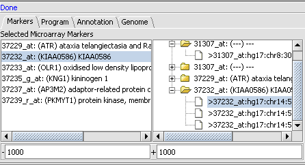

Synteny is a utility for comparison of extended genomic regions located in the Analysis Area in the lower-right of the application. To perform the analyses, complete the following steps:
- Gather the input data from Microarray markers from an activated panel or specified genomic region.
- Then run the regions comparison and the result is displayed in the Dot Matrix visualization.

Basic Usage
。 Markers: This subtab supports selection of marker for further analysis.
。 Program: List of analysis programs.
。 Annotation: The Annotation subtab changes the view of annotation tracks in the Dot Matrix view. Select or deselect the annotation track and than click Redraw button. Changes are made to the DotMatrix view.
。 Genome: Supports the selection of genomic regions to Add to Selected Regions panel.
。 Selected Microarray Markers: Displays markers from the active Gene Panel(s). The Genomic locations associated with selected markers are added to the tree in the right panel.
。 The text boxes below Selected Microarray Markers define the genomic region for the marker in the Selected Region From tree. The region can be modified prior to perform Add to Selected Regions.
1 Navigate to the Synteny tab located in the Analysis Area in the lower-right of the application.
2 In the Markers Tab, select a marker and right click. The menu with single item Add marker will appear.
3 If in server database has genomic locations associated with this marker they will be added to the tree in the right panel.
4 If there now genomic location for this marker in database the message “No sequence for this marker” will appears in the status line, in this case the genomic location for this marker can be entered manually in Genome subtab.
5 In the tree open all internal nodes and select one marker genomic location, note that in some cases marker can have more than one genomic location. The genomic location string includes marker name, genome ID, chromosome number, chromosome start and end positions, and associated gene ID.
6 Right click on selected genomic region and menu will appears. Click Add to Selected Regions to add specified genomic location to the list of selected genomics regions.
The Genome subtab supports selection of genomic regions to Add to selected to ass to the selected regions panel. In this panel you can select genomic positions by selecting the genome, chromosomes and chromosome start and end positions.
1 Navigate to the Genome subtab in the Synteny tab.
2 Select the genome, chromosome and start and end positions.
3 Click Add to selected button.

1 Navigate to the selected region list in the lower right.
2 Populate values for the sequence along the X Axis and Sequence along the Y Axis by right clicking on the genomic regions in selected regions list and selecting Add to X or Add to Y from popup menu.
3 Select program for performing analysis in the Program tab.
4 Click Run to start the comparison. The results will be displayed in the Dot Matrix Panel in visual area.